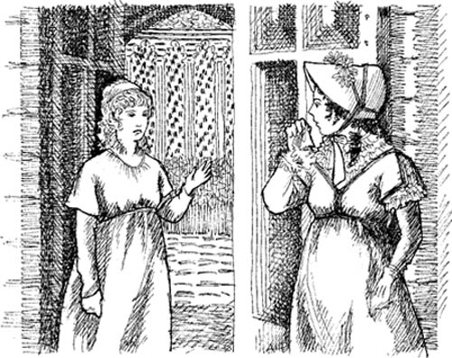

Catherine về nhà
Hôm đó là thứ Năm.
“Eleanor, tôi đã ở Tu viện Northanger bốn tuần rồi”, Catherine nói. “Tôi phải về nhà”.
“Ồ, làm ơn đừng đi!”, Eleanor nói.
“Hãy ở lại đi, cô Morland”, Henry nói. Anh mỉm cười với Catherine.
Catherine rất vui. “Ừ, Henry yêu mình”, cô thầm nhủ.

Hôm thứ Bảy, Henry trở về Woodston. Catherine và Eleanor ở bên nhau cả ngày. Cuối buổi chiều, Catherine đang ở trong phòng ngủ. Cô đang đọc sách.
Cô nghe thấy tiếng động bên ngoài phòng. Cô đến gần cửa và mở cửa. Eleanor đang đứng đó. Mặt cô tái nhợt.
“Có chuyện gì vậy?”, Catherine hỏi.
“Ồ, làm sao tôi có thể nói cho cô biết? Làm sao tôi có thể nói cho cô biết đây?”, Eleanor nói.
“Có chuyện gì xảy ra ở Woodston vậy?”, Catherine hỏi.
“Không, không phải. Bố tôi đã trở về”, Eleanor nói. “Catherine, chúng ta sẽ rời khỏi Tu viện Northanger vào thứ Hai. Chúng ta sẽ đến thăm một vài người bạn. Cô phải trở về Fullerton vào ngày mai. Tôi xin lỗi, Catherine.
Eleanor bắt đầu khóc.
“Tôi đã làm chuyện gì sai sao?”, Catherine hỏi.
“Không, không phải. Nhưng bố tôi rất tức giận”, Eleanor nói.
Catherine không ngủ ngon giấc đêm đó. Cô thức dậy rất sớm. Lúc sáu giờ, Eleanor bước vào phòng ngủ.
“Cỗ xe ngựa của bố tôi sẽ đưa cô về nhà”, Eleanor nói. “Cô phải lên đường lúc bảy giờ”.
Catherine không ăn sáng. Cô rất buồn. Chẳng mấy chốc, cỗ xe ngựa đã đến cửa.
“Tôi sẽ viết thư cho cô, Eleanor”, Catherine nói. “Hãy nói với Henry là—”

Nhưng Catherine không thể nói thêm được nữa. Cô chạy đến cỗ xe ngựa. Chẳng mấy chốc, cô đã rời khỏi Tu viện Northanger.
Mục lục
- Trang tiêu đề
- Trang bản quyền
- Mục lục
- Ghi chú về tác giả
- Ghi chú về câu chuyện này
- Các nhân vật trong câu chuyện
- 1 Catherine đến Bath
- 2 Những người bạn mới của Catherine
- 3 John và James
- 4 Đi khiêu vũ tại Upper Rooms
- 5 ‘Tại sao bạn lại nói dối tôi?’
- 6 Catherine và gia đình Tilney
- 7 Isabella đang yêu
- 8 Đại úy Frederick Tilney
- 9 Isabella và James
- 10 Tu viện Northanger
- 11 ‘Cô Morland thân mến!’
- 12 Đến thăm Woodston
- 13 Một lá thư từ Isabella
- 14 Catherine về nhà
- 15 ‘Anh sẽ cưới em chứ?’